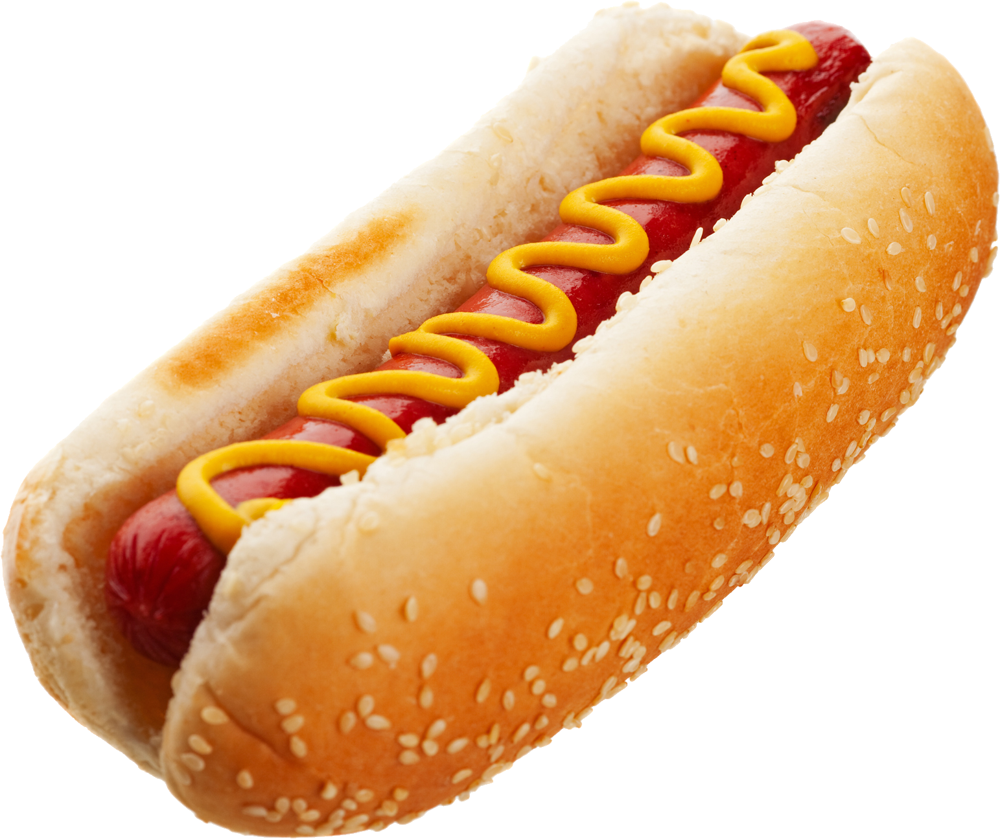

Ingredientes:
--Panes de hot dog ligeramente tostados
--Salchichas de pavo
--Cucharada de mostaza
--Cucharada de mayonesa
--Taza de pepinillo agrios picado
--Taza de chile jalapeño picados
--Taza de cebolla finamente picada
1.- Ponga a hervir las salchichas en una olla grande con agua por 20 minutos o hasta que estén bien cocidos.
2.- Retire las salchichas de la olla y seque bien.
3.- Toste los panes ya sea en una parilla o un hornito.
4.- Sirva cada salchicha dentro de un pan y ponga en la mesa todos los aditivos para que cada quien les agregue lo que más le guste: katchup, mayonesa, mostaza, pepinillos, etc.
Ve mas recetas :3